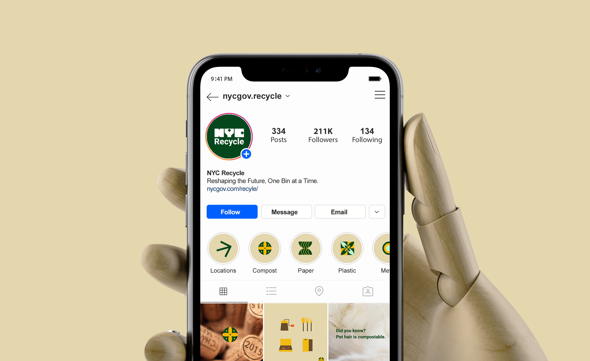
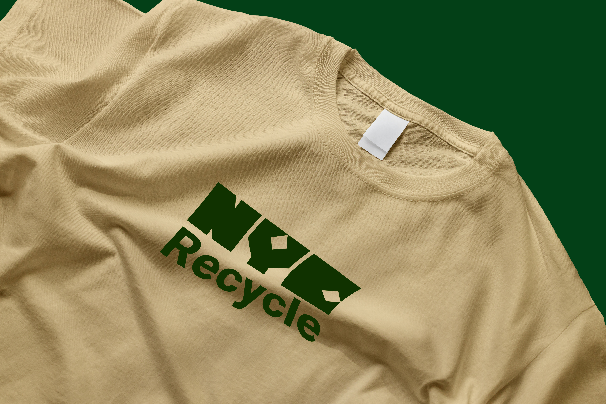
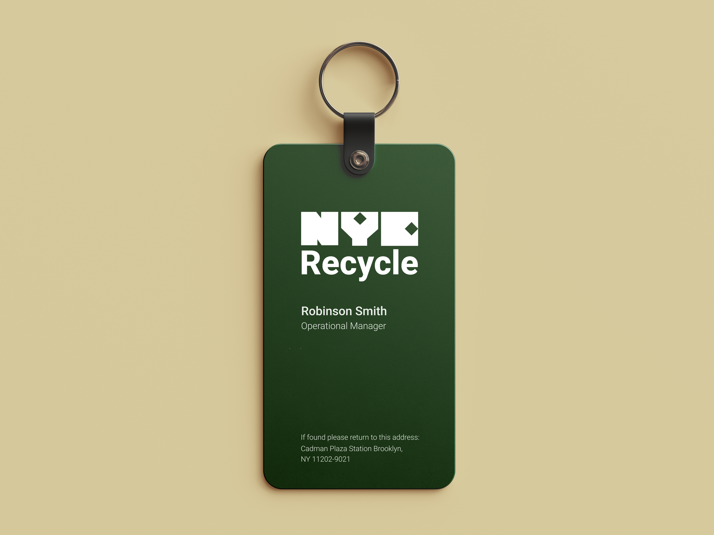
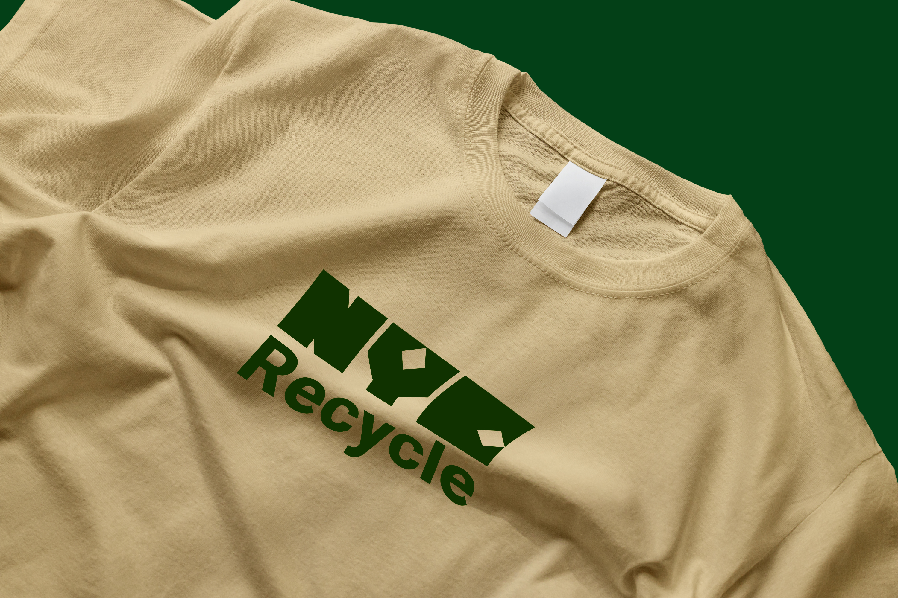
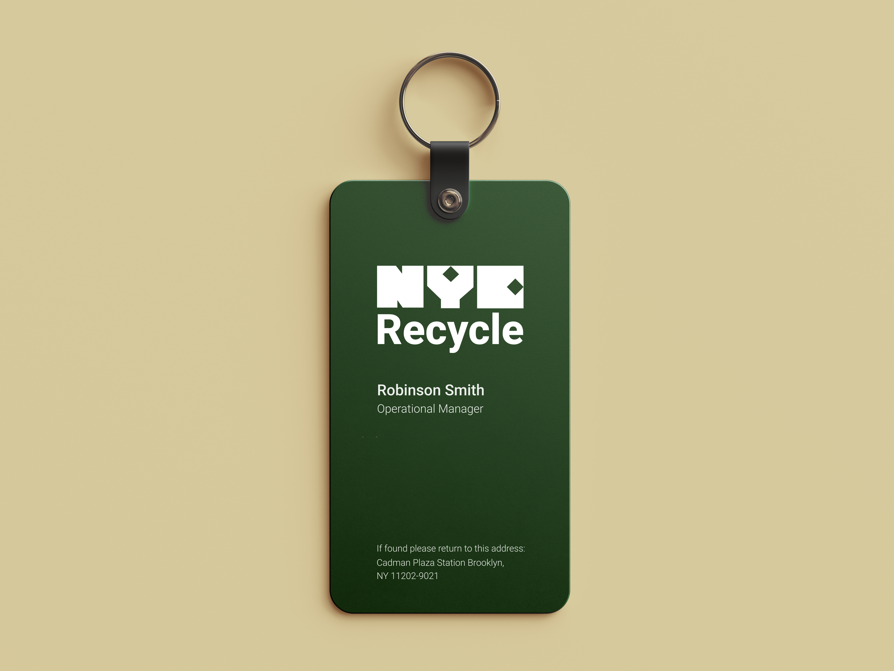

02
NYC.gov Recycle
Branding
Design System
Iconography
Environmental
Reshaping the future, one bin at a time.
To capture the essence of New York City's vibrant and bustling atmosphere, the revamped designs will embrace bold and dynamic visuals, updated typeface, and an engaging color palette. These elements will infuse the recycling program with the city's spirit, ensuring that it blends with the urban landscape while encourage more people to categorize their trash.

Keeping our city clean
Imagine a visual identity that breathes life into sustainability, drawing inspiration directly from recyclable materials. The color palette is a vibrant spectrum derived from the hues of glass, paper, plastic, and metal, echoing the diversity of the items we recycle.


Now you know where the recycling bins are.
Navigating through the concrete jungle reveals a unique challenge—on every bustling street, not every corner hosts the convenience of a trash can. It transforms the act of disposing of waste into an urban treasure hunt. Now, amid the vibrancy of the city, you can easily spot the designated bins, making waste disposal a seamless and efficient part of your New York experience.


Scroll, sort, save, unleashing the power of recycling wisdom in every swipe.

 



NYC Recycling: from curbsite to citywide
It's not just about bins; it's about making NYC a recycling playground where every action, no matter how small, adds up to a cleaner, greener, and way cooler city.